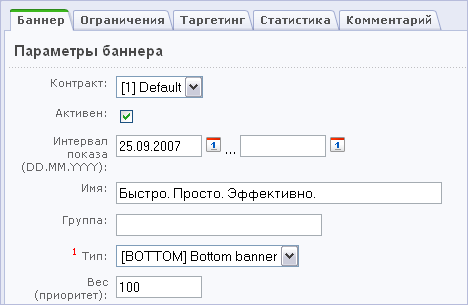
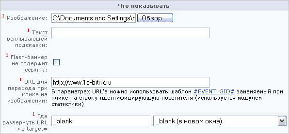
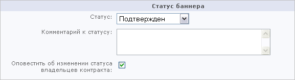
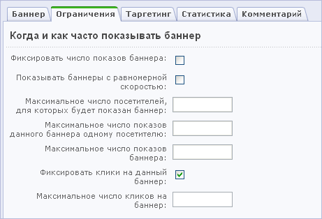
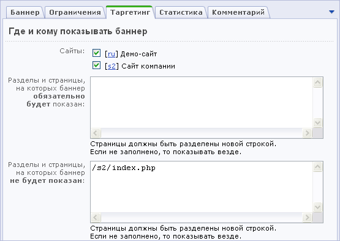
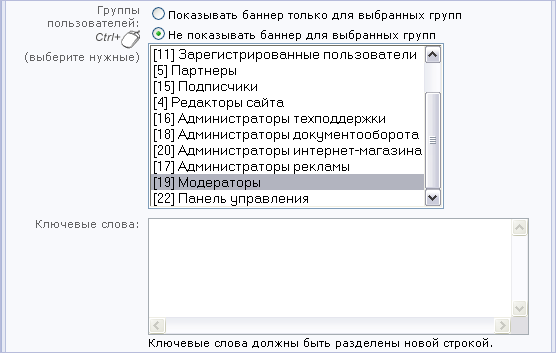
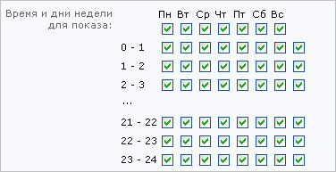
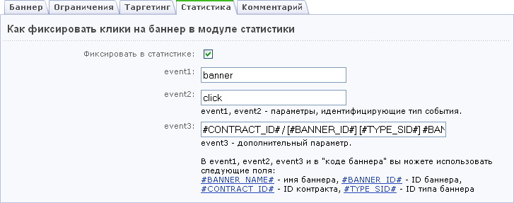

Размещение баннера на сайте
Чтобы добавить новый баннер на сайт, выполните следующее.
- Откройте страницу управления баннерами: Сервисы > Реклама > Баннеры.
- Выберите кнопку Добавить баннер на контекстной панели.
- Выберите Контракт, в соответствии с которым будет проводиться показ баннера.
- Для того чтобы баннер мог быть показан в публичном разделе, установите флаг в поле Активен.
- Укажите интервал показа баннера. Нажмите на кнопку , чтобы использовать календарь для выбора даты.
- Введите Имя баннера (имя отображается только в административном разделе и используется для удобства редактирования).
- Вы можете указать название Группы, к которой относится данный баннер. Можно создать новую группу или выбрать в выпадающем списке название одной из указанных ранее групп.
- Выберите место размещения баннера на странице (Тип рекламного блока).
- Укажите Вес (приоритет) баннера. Данное число влияет на вероятность выбора баннера для показа на сайте (чем выше значение вы укажете, тем чаще будет показан баннер).

- Загрузите изображение баннера.
- Если необходимо введите текст всплывающей подсказки для баннера. Этот текст будет показан при наведении курсора мыши на баннер.
- Укажите ссылку, по которой пользователь перейдет после нажатия на баннер. В ссылке можно использовать параметры referer1 и referer2. Подробнее об этих параметрах вы можете прочитать в разделе Статистика.
- Определите поведение окна веб-браузера при нажатии на баннер:
- _self – открыть в текущем окне;
- _blank – открыть в новом окне;
- _parent – открыть в своем фрейме;
- _top - открыть во всем текущем окне браузера.

- Если необходимо, введите HTML-код баннера. HTML-код используется при обмене баннерами или для размещения рекламного блока.
Если вы принимаете участие в обмене баннерами, хотите разместить собственный баннер или баннер другого сайта с использованием HTML, вам необходимо использовать специальный код баннера. Его нужно добавить в поле HTML-код. Если вы используете HTML-код для нескольких баннеров, то во избежание дублирования одних и тех же баннеров на одной странице сайта, вам следует указать значение переменной RANDOM. Всего в системе может быть использовано 5 различных параметров (%%RANDOM1%%...%%RANDOM5%%).
Если задается одновременный показ двух баннеров одной категории (например, в область кода вводится код для двух баннеров слева), то для них соответственно должны быть заданы параметры %%RANDOM1%% и %%RANDOM2%%. Эти параметры используются для того, чтобы избежать дублирования баннеров при показе, когда одновременно могут быть показаны два одинаковых баннера.
- Установите статус баннера:
- подтвержден - баннер доступен для показа на страницах сайта;
- на рассмотрении - баннер находится в состоянии рассмотрения;
- отклонен - баннер не будет показан на страницах сайта.

- Введите комментарий к изменению статуса.
- Если установить флаг в поле Оповестить об изменении статуса владельцев контракта, то при изменении статуса баннера будет сгенерированно и отправлено сообщение на основе шаблона Изменился статус баннера.
- Для того чтобы задать параметры показа баннера, перейдите на закладку Ограничения.
- Для фиксирования число показов баннера отметьте опцию Фиксировать число показов баннера.
- При отмеченной опции Показывать баннеры с равномерной скоростью баннер будет показываться с равномерной скоростью.
Если данная опция отмечена, то обязательно нужно настроить следующие параметры:
- указать интервал показа;
- отметить опцию фиксировать число показов баннера;
- задать максимальное число показов баннера.
- Укажите максимальное число посетителей, для которых будет показан данный баннер.
- Введите ограничение на число показов данного баннера одному посетителю.
- Укажите максимальное число показов баннера, при достижении которого баннер станет неактивным.
- Для того чтобы клики на баннер фиксировались в модуле статистики, установите флаг в поле Фиксировать клики на данный баннер.
- Укажите число нажатий (кликов) на баннер, при достижении которого баннер будет отключен.

Примечание:
Если вы не хотите устанавливать ограничения на количество показов и кликов на баннер, оставьте соответствующие поля формы незаполненными.
- Перейдите на закладку Таргетинг.
- Выберите сайт(ы), на котором будет показан баннер.
- Введите адреса страниц (разделов), на которых баннер будет показан.
- Введите адреса страниц (разделов), на которых баннер не будет показан.

- Установите ограничение на показ баннера для групп пользователей.
- Укажите ключевые слова, наличие которых является обязательным условием для показа баннера на странице.

- Настройте таргетинг рекламы по странам. Для этого нужно выбрать страны, для которых будет показан данный баннер.
- Настройте таргетинг рекламы по рекламным кампаниям. Баннер будет показан только для посетителей, пришедших по указанной рекламной кампании. Если не указывать кампанию, баннер будет показан всем посетителям.
- Настройте таргетинг рекламы по посетителям. Вы можете выбрать, каким посетителям показывать рекламу: новым, вернувшимся на сайт или всем посетителям.
- Выберите дни недели и часы, по которым будет осуществляться показ баннера.

- Для того чтобы задать параметры регистрации события клика по баннеру в модуле статистики, перейдите на закладку Статистика.
- Укажите значения полей event1, event2, event3. В этих полях указываются идентификаторы типа событий. Подробнее о типах событий можно прочитать в разделе Статистика.

- При необходимости создайте служебный комментарий. Для этого перейдите на закладку Комментарий. Созданное сообщение будет доступно для просмотра только в административном разделе.
- Нажмите кнопку Применить, чтобы сохранить изменения и продолжить редактирование параметры баннера.
- Нажмите кнопку Сохранить, чтобы добавить рекламный баннер и вернуться к списку рекламы.